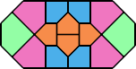
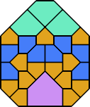
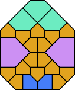
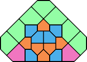
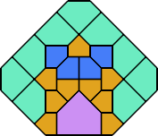
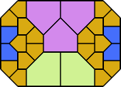

(2p) |  (4p) |  (13p) |
 . This month we consider tiling convex shapes with plates of various sizes. Here are 3 examples:
. This month we consider tiling convex shapes with plates of various sizes. Here are 3 examples:
(2p) | (4p) | (13p) |
What other convex plate tilings can you find?
Now consider a shape we will call a crown, a square with one corner cut off that can be tiled with 7 isosceles triangles:  . Here are a few convex shapes we can tile:
. Here are a few convex shapes we can tile:
 (2c) |  (4c) |
What other convex crown tilings can you find?
Are there other shapes of convex pentagons (tilable with isosceles right triangles) that can tile convex shapes? What if we mix plates and crowns? Now what convex shapes can be tiled?
 (24p,12c) |
 (4c) |  (10c) |
Berend Jan van der Zwaag and Joseph DeVincentis also found the following crown tilings:
 (3c) |  (2c) |
In 2013, George Sicherman found this crown tiling:
 (6c) |
Therefore convex crown tilings are known to exist for n=1, 2, 3, 4, 6, and 10.
Likewise, convex plate tilings exist for n=1, 2, 4, and 13.
Joseph DeVincentis found the following plate-crown tilings:
 (1p,1c) |  (2p,1c) |  (5p,2c) |  (7p,1c) |  (2p,3c) |
 (6p,4c) |  (4p,4c) |  (3p,5c) |  (7p,5c) |
 (8p,18c) |  (4p,28c) |
These have a vertical right edge and so can be combined in pairs to create tilings with an even number of plates and 8 crowns, or an odd number of plates and 5 crowns, or 4 plates and 2 crowns:
 (2p,1c) |  (1p,4c) |  ((2n+1)p,4c) |
These are squares, which can be stacked, or placed inside of other arrangements:
 (52p,17c) |  (32p,20c) |
In 2013, George Sicherman found this arrangement, which he hypothesized was the smallest tiling of a square with plates and crowns:
 (24p,12c) |
In 2018, George Sicherman found these arrangements:
 (48p,22c) |  (56p,32c) |
In 2023, George Sicherman found these arrangements:
|  (8p,6c) |  (14p,11c) |  (18p,5c) |  (8p,13c) |  (10p,13c) |  (21p,6c) |
Joseph DeVincentis and I both found the following crown-plate tilings:
 (16p,4c) |  (28p,4c) |  (28p,4c) |
 (4p,4c) |  (4p,20c) |  (12p,16c) |
Here are some additional tilings I found using both plates and crowns:
 (20p,4c) |  (32p,8c) |
In 2013, George Sicherman found this tiling:
 (2p,3c) |
Joseph DeVincentis proved that any convex shape that could be made using identical isosceles triangles that does not contain any sharp 45 degree angles could be tiled with plates and crowns. His proof follows. Choose a scale such that the lengths of all the sides are integers or integers times √2. The green unit squares are filled in with any of the known methods for tiling a square. The small purple squares are not strictly necessary but help to illustrate the flexibility of the tiling. The diagonal edges are filled with rows of plates, with smaller plates turned a different way at the corners. The interior is filled with squares. If a diagonal edge is missing (not shown in the figure), the squares simply extend all the way to the corner. If an orthogonal edge is missing, in place of the smaller plates use a small rotated square.

Berend Jan van der Zwaag considered tilings of houses:  . Here are his convex tilings:
. Here are his convex tilings:
 (2h) |  (5h) |  (10h) |
I found these:
 (4h) |  (6h) |  (9h) |  (12h) |
 (17h) |  (21h) |  (12h) |
 (38h) |  (36h) |
 (28h) |  (62h) |
In 2013, George Sicherman found these:
 (15h) |  (24h) |
In 2014, George Sicherman found this tiling:
 (104h) |
Berend Jan van der Zwaag also considered shapes like this one, a teardrop:  . He found convex tilings like these:
. He found convex tilings like these:
 (2t) |  (2t) |  (2t) |  (3t) |  (4t) |
 (3t) |  (4t) |  (3t) |
 (2t) |  (3t) |  (3t) |
I found these:
 (2t) |  (4t) |  (4t) |
Are there convex tilings using more than 4 tiles?
Joseph DeVincentis also considered a shape he called a barb:  . He noted that we can make two small convex shapes, shown below. But he also showed that this shape tiles any convex shape tilable by isosceles right triangles since 50 barbs tile a triangle. Then Bryce Herdt tiled a triangle with only 8 barbs.
. He noted that we can make two small convex shapes, shown below. But he also showed that this shape tiles any convex shape tilable by isosceles right triangles since 50 barbs tile a triangle. Then Bryce Herdt tiled a triangle with only 8 barbs.
 (2b) |  (4b) |  (50b) |  (8b) |
In 2013 and 2014, George Sicherman investigated convex figures using yet another shape:

| 
| 
| 
|
If you can extend any of these results, please e-mail me. Click here to go back to Math Magic. Last updated 2/4/13.